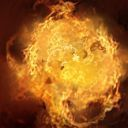
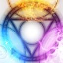
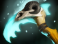
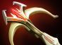
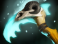
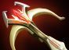

Dota 2 Builds
Invoker
Магия в своей самой ранней, даже можно сказать, самой мощной форме, всегда являлась в основном искусством памяти. Она не требовала техник, палочек или других принадлежностей, за исключением разума самого чародея. Всё, что ему было нужно — мнемонические средства, помогающие колдующему вспомнить в полных деталях ту психологическую формулу, что раскроет магическую силу. Величайшие волшебники тех дней были одарены отличной памятью, а сами заклинания были настолько сложны и громоздки, что чародеи были вынуждены на чем-то специализироваться. Однако даже самые отличные волшебники могли надеяться лишь на то, что они они запомнят за всю свою жизнь три-четыре заклинания, не более. Обычные маги знали всего два заклинания, так что это не такое уж и необычное явление, когда деревенский чародей знал только одно заклинание, да и то требовало титанических усилий, куч подсказок и инструкций, работающих, как лекарство от забывчивости, в те редкие случаи, когда это самое заклинание просили продемонстрировать. Но среди всех этих волшебников было всего одно, но гениальное и владеющее огромной памятью исключение, и имя ему — Invoker. Уже в своей юности взрослый не по годам волшебник сумел набить руку на использовании не четырех, не пяти, и даже не семи, а не менее десятка заклинаний, которые он сотворял практически мгновенно! Еще больше он уже и так знал, но просто считал бесполезными. Одно из его заклинаний — Sempiternal Cantrap — было такой огромной мощи, что следы от его использования в первые дни создания мира видны до сих пор (или просто расщеплены на атомы). Большинство почти-бессмертных живут тихо, пряча от мира свой секрет, но Invoker — отнюдь не тот, кто хранит свой дар в кладовке. Он — древний, знающий гораздо больше остальных, разум которого все еще имеет свободное место для рассуждений о смысле существования… как и для колдовства, которым он развлекает себя, наблюдая за последними днями этого мира.
Способности/Abulities
Quas
Позволяет управлять стихией льда и даёт +2 к силе за уровень. Каждая активная сфера Quas увеличивает восстановление здоровья.Способность: ненаправленная
Действует на: себя
Дает сфер Quas при использовании: 1
Бонус к силе: 2/4/6/8/10/12/14
Бонус эффектов за сферу: 0 (Талант: 3)
Wex
 Позволяет управлять стихией молнии и даёт +2 к ловкости за уровень. Каждая активная сфера Wex увеличивает скорость атаки и передвижения.
Позволяет управлять стихией молнии и даёт +2 к ловкости за уровень. Каждая активная сфера Wex увеличивает скорость атаки и передвижения.
Способность: ненаправленная
Действует на: себя
Дает сфер Wex при использовании: 1
Бонус к скорости передвижения за сферу: 0,8/1,6/2,4/3,2/4/4,8/5,6%
Бонус к ловкости: 2/4/6/8/10/12/14
Бонус эффектов за сферу: 0 (Талант: 3)
Exort
 Позволяет управлять стихией огня и даёт +2 к интеллекту за уровень. Каждая активная сфера Exort увеличивает урон от атак.Способность: ненаправленная
Действует на: себя
Дает сфер Exort при использовании: 1
Бонус к урону за сферу: 2/4/6/8/10/12/14
Бонус к интеллекту: 2/4/6/8/10/12/14
Бонус эффектов за сферу: 0 (Талант: 3)
Invoke
 Герой комбинирует элементы использующихся стихий, чтобы создать новое заклинание. Перезарядка этой способности снижается на 0,3 сек. за каждый уровень сфер.
Способность: ненаправленная
Действует на: себя
Макс. заклинаний: 2
Уменьшение перезарядки за уровень сферы: 0,3
Бонус к интеллекту: 2/4/6/8/10/12/14
Бонус эффектов за сферу: 0 (Талант: 3)
Cold Snap
 Вытягивает тепло из врага на время, зависящее от уровня Quas. Враг получит урон и будет ненадолго заморожен. Последующий урон, полученный в этом состоянии, вновь заморозит врага и нанесёт ему дополнительный урон. Минимальный интервал между заморозками зависит от уровня Quas.
Вытягивает тепло из врага на время, зависящее от уровня Quas. Враг получит урон и будет ненадолго заморожен. Последующий урон, полученный в этом состоянии, вновь заморозит врага и нанесёт ему дополнительный урон. Минимальный интервал между заморозками зависит от уровня Quas.

Способность: направленная на юнита
Действует на: врагов
Тип урона: магический
Дальность применения: 1000
Урон за срабатывание заморозки (Quas): 8/16/24/32/40/48/56
Перезарядка заморозки (Quas): 0,83/0,80/0,77/0,74/0,71/0,68/0,65
Длительность эффекта (Quas): 3/3,5/4/4,5/5/5,5/6
Длительная дрожь Садрона.Ghost Walk
Герой комбинирует стихии льда и молнии, становясь невидимым. Неравновесие элементов создаёт магическое поле, замедляющее врагов в зависимости от уровня Quas, однако и сам герой замедляется, но в зависимости от уровня Wex.Способность: ненаправленная
Действует на: врагов/себя
Тип урона: магический
Время до невидимости: 0
Радиус замедления: 450
Замедление скорости врагов (Quas): 20/25/30/35/40/45/50%
Собственная скорость (Wex): -15/-10/-5/0/+5/+10/+15%
Длительность задержки ауры: 2
Длительность: 60
Призрак Мирота.Ice Wall
Создаёт перед героем ледяную стену, время существования которой основано на уровне Quas. Её свирепый мороз сильно замедляет врагов, основываясь на уровне Quas, и каждую секунду наносит им урон, зависящий от уровня Exort.Способность: ненаправленная
Действует на: врагов
Тип урона: магический
Дистанция появления стены: 200
Длина стены: 1120
Ширина стены: 105
Урона в секунду (Exort): 6/12/18/24/30/36/42
Замедление скорости передвижения (Quas): 20/40/60/80/100/120/140%
Длительность стены (Quas): 3/4,5/6/7,5/9/10,5/12
Длительность замедления: 2
Гибельная стена Корикса.E.M.P.
Создаёт концентрированный сгусток энергии, который спустя 2,9 сек. взрывается, выжигая ману у всех врагов в области действия. Каждая единица выжженной маны наносит врагам урон и восстанавливает 0,5 маны владельцу способности. Количество сжигаемой маны основано на уровне Wex.Способность: направленная на область
Действует на: врагов
Тип урона: магический
Дальность применения: 950
Радиус: 675
Задержка: 2,9
Сжигает маны (Wex): 100/175/250/325/400/475/550 (Талант: 120/210/300/390/480/570/660)
Урон от сожженной маны: 60%
Восстановление собственной маны: 50%
Недоброе коловращение Эндолеона.Tornado
Выпускает стремительный торнадо, который поднимает в воздух врагов на своём пути, а затем обрушивает их на землю. Дальность действия торнадо зависит от уровня Wex. Длительность полёта врагов зависит от уровня Quas. От падения противники получают как базовый урон, так и дополнительный, который зависит от уровня Wex.Способность: направленная на точку
Действует на: врагов
Тип урона: магический
Дальность применения: 2000
Радиус: 200
Дистанция прохождения (Wex): 800/1200/1600/2000/2400/2800/3200
Базовый урон: 70
Дополнительный урон от (Wex): 45/90/135/180/225/270/315
Длительность закручивания (Quas): 0,85/1,1/1,35/1,6/1,85/2,1/2,35
Когти Торнаруса.Alacrity
Вызывает у союзника прилив сил, увеличивая его скорость атаки в зависимости от уровня Wex и повышая урон от атак в зависимости от уровня Exort.Способность: направленная на юнита
Действует на: союзников
Дальность применения: 650
Дополнительная скорость атаки (Wex): 10/22/34/46/58/70/82 (Талант: 40/52/64/76/88/100/112)
Дополнительный урон (Exort): 10/22/34/46/58/70/82 (Талант: 40/52/64/76/88/100/112)
Длительность: 9
Заклятие стремительности Гастера.Sun Strike
Посылает катастрофический луч ожесточённой энергии солнца в заданную точку, который сжигает всех стоящих под ним врагов, как только достигнет земли. Урон зависит от уровня Exort и равномерно распределяется по всем задетым противникам.Способность: направленная на область
Действует на: врагов
Тип урона: чистый
Дальность применения: глобальная
Радиус: 175
Задержка: 1,7
Урон (Exort): 120/180/240/300/360/420/480
Заклятие испепеления Харлека.Forge Spirit
Призывает рукотворного духа, живое воплощение сил льда и огня. Урон и броня духа зависят от уровня Exort, а радиус атаки, здоровье и время его жизни основаны на уровне Quas. Атаки духа снижают броню вражеских героев. Создаёт двух духов, если и Quas, и Exort выше четвёртого уровня.Способность: ненаправленная
Количество духов: 1
Урон духа (Exort): 22/32/42/52/62/72/82
Дальность атаки духа (Quas): 300/365/430/495/560/625/690
Здоровье духа (Exort): 300/400/500/600/700/800/900
Мана духа (Quas): 100/150/200/250/300/350/400
Броня духа (Exort): 0/1/2/3/4/5/6
Длительность духа (Quas): 20/30/40/50/60/70/80
Хитроумные конструкции Кальвина.Chaos Meteor
Герой низвергает с небес пылающий метеорит, который после падения катится вперёд на расстояние, зависящее от уровня Wex. Прикосновение к метеориту наносит урон, основанный на уровне Exort, и ненадолго охватывает жертву огнём, наносящим периодический урон в зависимости от уровня Exort.Способность: направленная на точку
Действует на: врагов
Тип урона: магический
Дальность применения: 700
Радиус: 275
Задержка: 1,3
Интервал урона от касания: 0,5
Урон от касания (Exort): 52/71/90/109/128/147/166 (Талант: 93,6/127,8/162/196,2/230,4/264,6/298,8)
Урон от огня в секунду (Exort): 10/14/18/22/26/30/34 (Талант: 18/25,2/32,4/39,6/46,8/54/61,2)
Длительность горения: 3
Огонь небес Тарака.Deafening Blast
Выпускает мощную звуковую волну, наносящую всем задетым врагам урон, основанный на уровне Exort. Исключительная мощь волны отталкивает противников на расстояние, основанное на уровне Quas, и накладывает на них бессилие, длительность которого зависит от уровня Wex.Способность: направленная на точку
Действует на: врагов
Тип урона: магический
Дальность применения: 1000
Начальный радиус: 175
Дальность прохождения: 1000
Конечный радиус: 225
Урон (Exort): 60/100/140/180/220/260/300
Дистанция толчка (Quas): 45,6/88,6/133,5/171,5/205/242,1/274,3
Продолжительность толчка (Quas): 0,2/0,4/0,6/0,8/1/1,2/1,4
Продолжительность разоружения (Wex): 1,25/2/2,75/3.5/4,25/5/5,75
Звуковой обездвиживатель Булуфонта.Сборка/Builds
Starting items:


Early game:


Main game:
 



YOUTUBE:GREYSHARK
ЭТА СБОРКА В STEAM